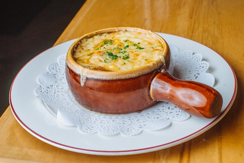
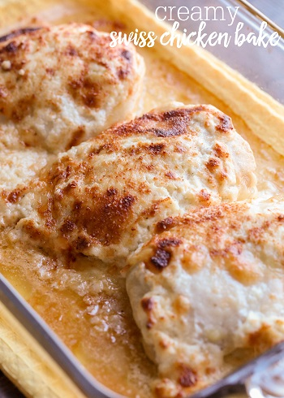
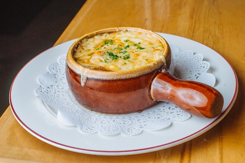
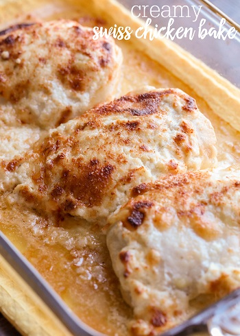

Rosti - Rösti is a potato dish made by frying flat round patties of coarsely grated raw or parboiled (semi-cooked), seasoned potato in oil.
Muesli - a mix of rolled oat flakes, fruit, nuts, lemon juice and condensed milk
Raclette - Raclette is the name of a Swiss cheese made from cow's milk
Bűndnernusstorte - a yummy caramelised nut-filled pastry originating from the canton of Graubűnden
Saffron risotto - risotto rice cooked slowly with onions, stock, saffron threads, wine and cheese
Zopf - soft white loaf, The dough is made from white flour, milk, eggs, butter and yeast, plaited into a braid and then brushed with egg yolk before baking
Zurchergeschnetzeltes - veal is cooked with mushrooms, onions, wine and cream and usually eaten with rösti, noodles or rice
Berner platte - consists of a whole range of meats and sausages, which may include beef, ham, smoked bacon, smoked beef and pork tongue, spare ribs, pork knuckle, pork loin and shoulder, marrow bone
Älplermagronen - cheese, potatoes, onions, macaroni, milk or cream, and apples

 


